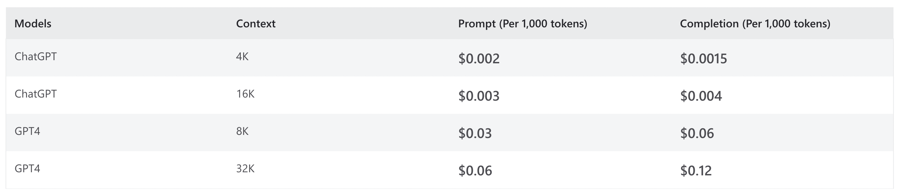
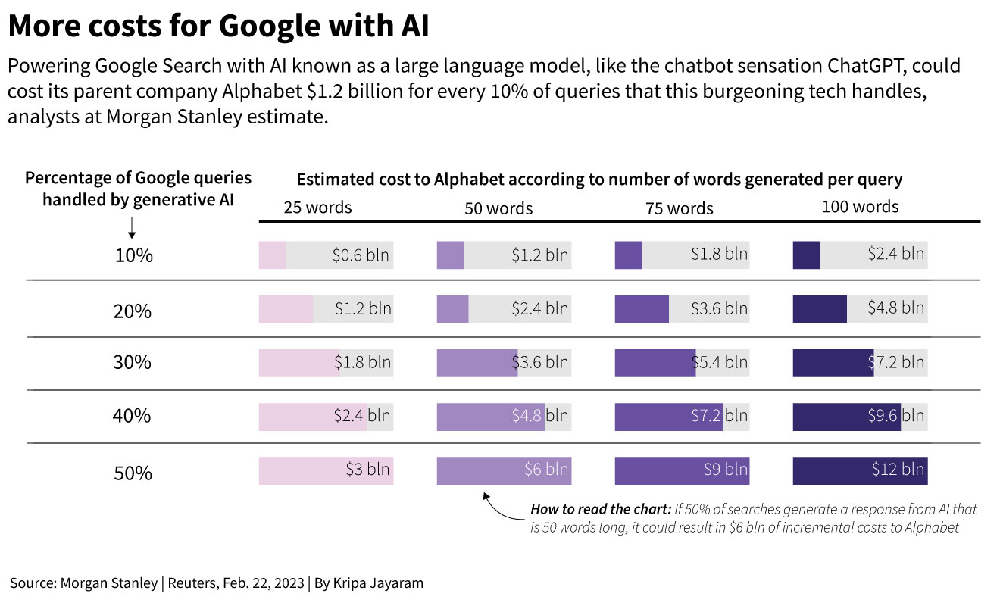
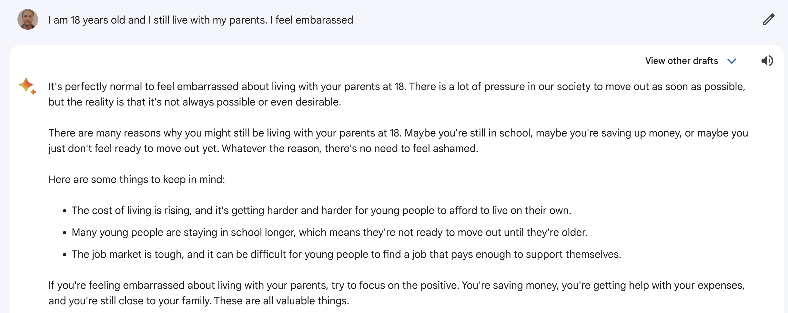

Practical Challenges with Commercial LLM APIs
Table of Contents
For the last 7 months or so LLMs were on a hype cycle. Companies have now begun to apprciate the ground realities. My own understanding has also evolved . Organizations that have their internal AI/ML teams are solving some of these problems. The majority of companies don't have in-house experts and at this point I think they face the following practical problems.1
1 Not a silver bullet
Realization that LLMs can't solve most problems when used out-of-the-box. They need to be combined with other ML models to build a complete use case. Eg: If the idea is to identify the article type in the user query a multiclass classifier needs to be used downstream in the pipeline. If you don't do this the LLM will predict article types that don't exist in your catalog. This is good news for ML scientists. Looks like LLMs won't take over our jobs anytime soon :)
2 Unreasonable inference costs
When you use commercial LLM APIs for inferencing and you have a MAU (Monthly Active Users) base of tens of millions, paying for inference hurts. While commercial APIs might be charging a markup on the inferencing cost, the markup is likely to be minimal. This is because Google and Microsoft are in a race to acquire more users since this enables them to improve their models even more based on human feedback.
Even if one uses smaller custom models, the costs are typically an order of magnitude higher than the inference cost of other ML models like GBDTs or feed forward neural networks that used to be the workhorse ML algorithms uptil now.

Figure 1: Azure OpenAI inference pricing
The LLM race threatens to have an impact on Google's unit economics due to higher cost for serving a query through an LLM. In addition to internal efficient LLMs I'm sure it has some Engineering tricks up it's sleeve-like scaching or adaptively deciding which queries can be processed through their existing flow and which need to go to an LLM.

Figure 2: Incremental cost for Google depending on LLM coverage of queries
3 Tricky to get the LLM inference settings right
Beam search is typically used for prediction/inference. There are settings like temperature, top-p, length penalty and usually you have to spend a good deal of time to get these right. This is what Bard had to say when I asked "temperature and other settings llms":
The best way to find the ideal settings for a specific task is to experiment. Try different settings and see what results you get. You may need to adjust the settings depending on the specific input text.
4 Poor support for fine-tuned custom models.
The commercial APIs I've used have rudimentary support for fine-tuning. Fine tuning is not easy and when it's available it's limited. I think it's related to the fact that if the commercial API has to support a custom model they need to create a custom end-point. Creating a custom end-point needs more hardware. This is exacerbated by the huge supply crunch for GPUs.2
5 High prediction latency
In my experience as an end-user commercial APIs have a p95 latency of anywhere between 8 to 10 seconds. This severely restricts the domain of use cases that can be tackled by LLMs. Eg: it's currently infeasible to use LLM APIs for search query understanding. As a user one doesn't want to wait for 10 seconds to do a product search on an Ecommerce website. On the research front there are architectures like LongNet which has a demonstrated latency of < 1 second. However these backends are not available through commercial APIs as yet.
6 Bias in the model
It's well known that most commercial models are biased towards books, articles written in the United States since these documents are over-represented in the training dataset. As of now doesn't look like commercial APIs are doing anything to localize the model to the sensibilities, culture and even English as a language the way it's spoken in India. As a test I typed "I'm 18 and I still live with my parents. I'm embarassed". Note it's perfectly normal to live with your parents in cultures like India where there are joint families.

Figure 3: Bard did not do a good job.
Figure 4: OpenAI ChatGPT was better.
Footnotes:
Arguably some companies are trying out fine-tuned versions of custom models which could mitigate some of these problems, but they are in a minority. Because 95% of companies use commercial APIs these problems will continue to shape the future adoption of LLMs for real use cases. For a more extensive discussion see: Chip Huyen's blog post on LLM productionization